Metascape Gene List Analysis Report
metascape.org1
Bar Graph Summary
Figure 1. Bar graph of enriched terms across input gene lists, colored by p-values.
|
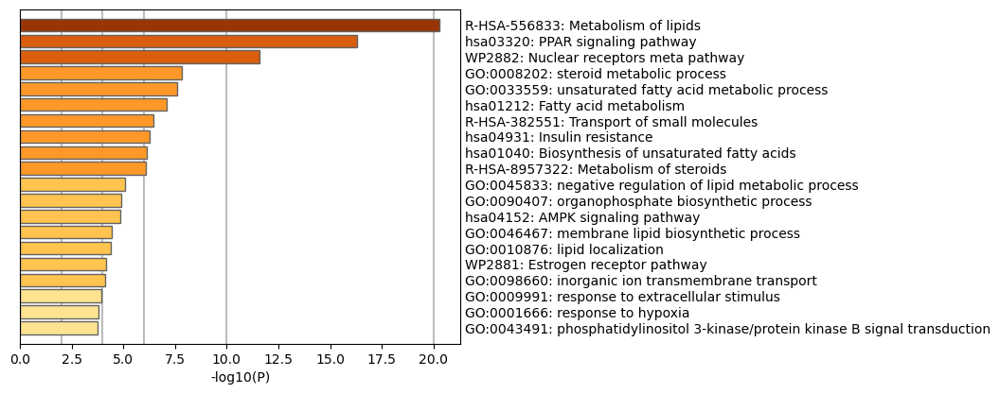
|

|
Metascape only visualizes the top 20 clusters. Up to 100 enriched clusters can be viewed here.
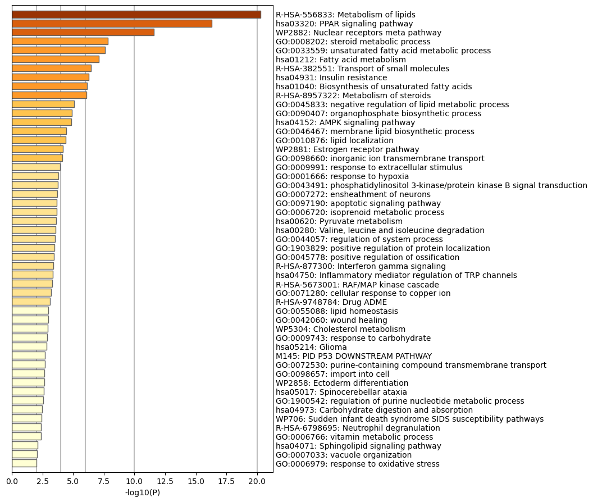
|
The top-level Gene Ontology biological processes can be viewed here.
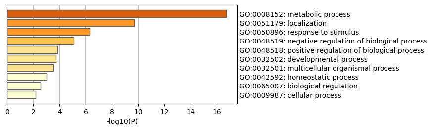
|
Gene Lists
User-provided gene identifiers are first converted into their corresponding H. sapiens Entrez gene IDs using the latest version of the database (last updated on 2024-05-01). If multiple identifiers correspond to the same Entrez gene ID, they will be considered as a single Entrez gene ID in downstream analyses. The gene lists are summarized in Table 1.
Table 1. Statistics of input gene lists.
| Name |
Total |
Unique |
| MyList |
250 |
195 |
Gene Annotation
The following are the list of annotations retrieved from the latest version of the database (last updated on 2024-05-01) (Table 2).
Table 2. Gene annotations extracted
| Name |
Type |
Description |
| Gene Symbol |
Description |
Primary HUGO gene symbol. |
| Description |
Description |
Short description. |
| Biological Process (GO) |
Function/Location |
Descriptions summarized based on gene ontology database, where up to three most informative GO terms are kept. |
| Kinase Class (UniProt) |
Function/Location |
Detailed kinase classes. |
| Protein Function (Protein Atlas) |
Function/Location |
Protein Function (Protein Atlas) |
| Subcellular Location (Protein Atlas) |
Function/Location |
Subcellular Location (Protein Atlas) |
| Drug (DrugBank) |
Genotype/Phenotype/Disease |
Drug information for the given gene as target. |
| Protein Functions (ChatGPT) |
Description |
Uncurated gene functions described by ChatGPT. |
| Disease & Drugs (ChatGPT) |
Genotype/Phenotype/Disease |
Uncurated disease and drug associations described by ChatGPT. |
| Canonical Pathways
|
Ontology |
Canonical Pathways
|
| Hallmark Gene Sets
|
Ontology |
Hallmark Gene Sets
|
Pathway and Process Enrichment Analysis
For each given gene list, pathway and process enrichment analysis have been carried out with the following ontology sources: KEGG Pathway, GO Biological Processes, Reactome Gene Sets, Canonical Pathways, CORUM, and WikiPathways. All genes in the genome have been used as the enrichment background. Terms with a p-value < 0.01, a minimum count of 3, and an enrichment factor > 1.5 (the enrichment factor is the ratio between the observed counts and the counts expected by chance) are collected and grouped into clusters based on their membership similarities. More specifically, p-values are calculated based on the cumulative hypergeometric distribution
2, and q-values are calculated using the Benjamini-Hochberg procedure to account for multiple testings
3. Kappa scores
4 are used as the similarity metric when performing hierarchical clustering on the enriched terms, and sub-trees with a similarity of > 0.3 are considered a cluster. The most statistically significant term within a cluster is chosen to represent the cluster.
Table 3. Top 20 clusters with their representative enriched terms (one per cluster). "Count" is the number of genes in the user-provided lists with membership in the given ontology term. "%" is the percentage of all of the user-provided genes that are found in the given ontology term (only input genes with at least one ontology term annotation are included in the calculation). "Log10(P)" is the p-value in log base 10. "Log10(q)" is the multi-test adjusted p-value in log base 10.
| GO |
Category |
Description |
Count |
% |
Log10(P) |
Log10(q) |
| R-HSA-556833 |
Reactome Gene Sets |
Metabolism of lipids |
36 |
18.46 |
-20.28 |
-15.94 |
| hsa03320 |
KEGG Pathway |
PPAR signaling pathway |
14 |
7.18 |
-16.28 |
-12.42 |
| WP2882 |
WikiPathways |
Nuclear receptors meta pathway |
18 |
9.23 |
-11.58 |
-8.19 |
| GO:0008202 |
GO Biological Processes |
steroid metabolic process |
13 |
6.67 |
-7.83 |
-4.75 |
| GO:0033559 |
GO Biological Processes |
unsaturated fatty acid metabolic process |
9 |
4.62 |
-7.59 |
-4.55 |
| hsa01212 |
KEGG Pathway |
Fatty acid metabolism |
7 |
3.59 |
-7.08 |
-4.14 |
| R-HSA-382551 |
Reactome Gene Sets |
Transport of small molecules |
19 |
9.74 |
-6.47 |
-3.61 |
| hsa04931 |
KEGG Pathway |
Insulin resistance |
8 |
4.10 |
-6.28 |
-3.47 |
| hsa01040 |
KEGG Pathway |
Biosynthesis of unsaturated fatty acids |
5 |
2.56 |
-6.12 |
-3.35 |
| R-HSA-8957322 |
Reactome Gene Sets |
Metabolism of steroids |
9 |
4.62 |
-6.10 |
-3.34 |
| GO:0045833 |
GO Biological Processes |
negative regulation of lipid metabolic process |
7 |
3.59 |
-5.07 |
-2.46 |
| GO:0090407 |
GO Biological Processes |
organophosphate biosynthetic process |
14 |
7.18 |
-4.89 |
-2.31 |
| hsa04152 |
KEGG Pathway |
AMPK signaling pathway |
7 |
3.59 |
-4.85 |
-2.29 |
| GO:0046467 |
GO Biological Processes |
membrane lipid biosynthetic process |
7 |
3.59 |
-4.44 |
-1.96 |
| GO:0010876 |
GO Biological Processes |
lipid localization |
11 |
5.64 |
-4.38 |
-1.91 |
| WP2881 |
WikiPathways |
Estrogen receptor pathway |
3 |
1.54 |
-4.14 |
-1.71 |
| GO:0098660 |
GO Biological Processes |
inorganic ion transmembrane transport |
15 |
7.69 |
-4.10 |
-1.69 |
| GO:0009991 |
GO Biological Processes |
response to extracellular stimulus |
12 |
6.15 |
-3.91 |
-1.54 |
| GO:0001666 |
GO Biological Processes |
response to hypoxia |
9 |
4.62 |
-3.81 |
-1.46 |
| GO:0043491 |
GO Biological Processes |
phosphatidylinositol 3-kinase/protein kinase B signal transduction |
5 |
2.56 |
-3.77 |
-1.44 |
To further capture the relationships between the terms, a subset of enriched terms has been selected and rendered as a network plot, where terms with a similarity > 0.3 are connected by edges. We select the terms with the best p-values from each of the 20 clusters, with the constraint that there are no more than 15 terms per cluster and no more than 250 terms in total. The network is visualized using
Cytoscape5, where each node represents an enriched term and is colored first by its cluster ID (Figure 2.a) and then by its p-value (Figure 2.b). These networks can be interactively viewed in Cytoscape through the .cys files (contained in the Zip package, which also contains a publication-quality version as a PDF) or within a browser by clicking on the web icon. For clarity, term labels are only shown for one term per cluster, so it is recommended to use Cytoscape or a browser to visualize the network in order to inspect all node labels. We can also export the network into a PDF file within Cytoscape, and then edit the labels using Adobe Illustrator for publication purposes. To switch off all labels, delete the "Label" mapping under the "Style" tab within Cytoscape, and then export the network view.
Figure 2. Network of enriched terms: (a) colored by cluster ID, where nodes that share the same cluster ID are typically close to each other; (b) colored by p-value, where terms containing more genes tend to have a more significant p-value.
Protein-protein Interaction Enrichment Analysis
For each given gene list, protein-protein interaction enrichment analysis has been carried out with the following databases: STRING
6, BioGrid
7, OmniPath
8, InWeb_IM
9.Only physical interactions in STRING (physical score > 0.132) and BioGrid are used (
details). The resultant network contains the subset of proteins that form physical interactions with at least one other member in the list. If the network contains between 3 and 500 proteins, the Molecular Complex Detection (MCODE) algorithm
10 has been applied to identify densely connected network components. The MCODE networks identified for individual gene lists have been gathered and are shown in Figure 3.
Pathway and process enrichment analysis has been applied to each MCODE component independently, and the three best-scoring terms by p-value have been retained as the functional description of the corresponding components, shown in the tables underneath corresponding network plots within Figure 3.
Figure 3. Protein-protein interaction network and MCODE components identified in the gene lists.
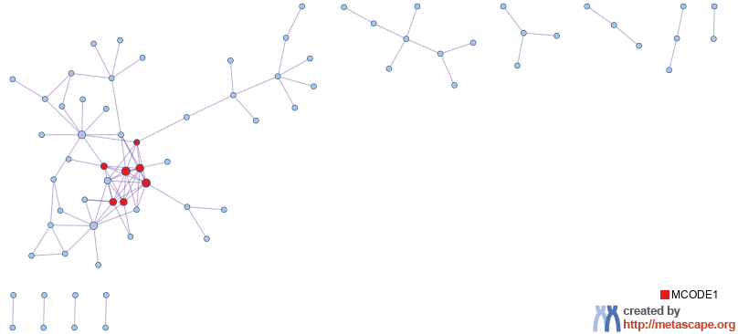 | | 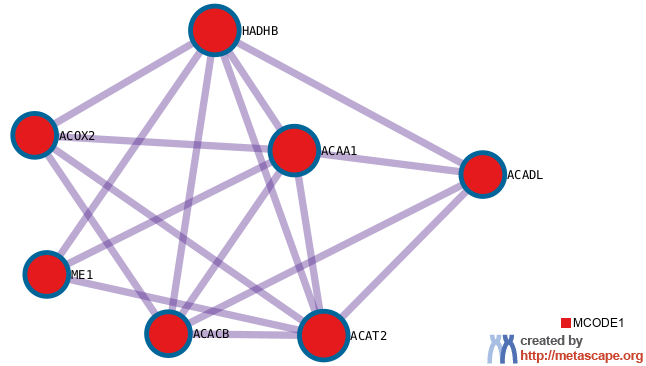 |


| |
|
| GO |
Description |
Log10(P) |
| R-HSA-556833 |
Metabolism of lipids |
-23.9 |
| GO:0006631 |
fatty acid metabolic process |
-20.6 |
| GO:0032787 |
monocarboxylic acid metabolic process |
-19.4 |
| |
| Color |
MCODE |
GO |
Description |
Log10(P) |
|
MCODE_1 |
GO:0019395 |
fatty acid oxidation |
-14.7 |
|
MCODE_1 |
GO:0034440 |
lipid oxidation |
-14.5 |
|
MCODE_1 |
GO:0030258 |
lipid modification |
-12.7 |
|
Quality Control and Association Analysis
Gene list enrichments are identified in the following ontology categories: COVID, Cell_Type_Signatures, DisGeNET, PaGenBase, TRRUST, Transcription_Factor_Targets. All genes in the genome have been used as the enrichment background. Terms with a p-value < 0.01, a minimum count of 3, and an enrichment factor > 1.5 (the enrichment factor is the ratio between the observed counts and the counts expected by chance) are collected and grouped into clusters based on their membership similarities. The top few enriched clusters (one term per cluster) are shown in the Figure 4-9. The algorithm used here is the same as that is used for pathway and process enrichment analysis.
Figure 4. Summary of enrichment analysis in COVID11.
|
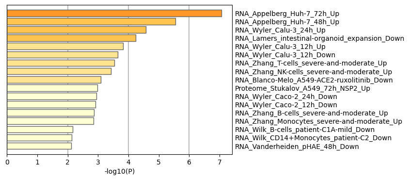
|
|
|
| GO |
Description |
Count |
% |
Log10(P) |
Log10(q) |
| COVID006 |
RNA_Appelberg_Huh-7_72h_Up |
13 |
6.70 |
-7.10 |
-2.90 |
| COVID004 |
RNA_Appelberg_Huh-7_48h_Up |
7 |
3.60 |
-5.50 |
-1.90 |
| COVID050 |
RNA_Wyler_Calu-3_24h_Up |
10 |
5.10 |
-4.60 |
-1.30 |
| COVID027 |
RNA_Lamers_intestinal-organoid_expansion_Down |
9 |
4.60 |
-4.20 |
-1.20 |
| COVID048 |
RNA_Wyler_Calu-3_12h_Up |
9 |
4.60 |
-3.80 |
-0.83 |
| COVID047 |
RNA_Wyler_Calu-3_12h_Down |
7 |
3.60 |
-3.60 |
-0.68 |
| COVID359 |
RNA_Zhang_T-cells_severe-and-moderate_Up |
6 |
3.10 |
-3.50 |
-0.62 |
| COVID356 |
RNA_Zhang_NK-cells_severe-and-moderate_Up |
5 |
2.60 |
-3.40 |
-0.59 |
| COVID011 |
RNA_Blanco-Melo_A549-ACE2-ruxolitinib_Down |
7 |
3.60 |
-3.10 |
-0.38 |
| COVID157 |
Proteome_Stukalov_A549_72h_NSP2_Up |
4 |
2.10 |
-3.00 |
-0.32 |
| COVID045 |
RNA_Wyler_Caco-2_24h_Down |
3 |
1.50 |
-2.90 |
-0.29 |
| COVID043 |
RNA_Wyler_Caco-2_12h_Down |
5 |
2.60 |
-2.90 |
-0.28 |
| COVID362 |
RNA_Zhang_B-cells_severe-and-moderate_Up |
4 |
2.10 |
-2.90 |
-0.26 |
| COVID353 |
RNA_Zhang_Monocytes_severe-and-moderate_Up |
5 |
2.60 |
-2.80 |
-0.24 |
| COVID336 |
RNA_Wilk_B-cells_patient-C1A-mild_Down |
3 |
1.50 |
-2.20 |
0.00 |
| COVID249 |
RNA_Wilk_CD14+Monocytes_patient-C2_Down |
3 |
1.50 |
-2.10 |
0.00 |
| COVID202 |
RNA_Vanderheiden_pHAE_48h_Down |
5 |
2.60 |
-2.10 |
0.00 |
|
Figure 5. Summary of enrichment analysis in Cell Type Signatures12.
|
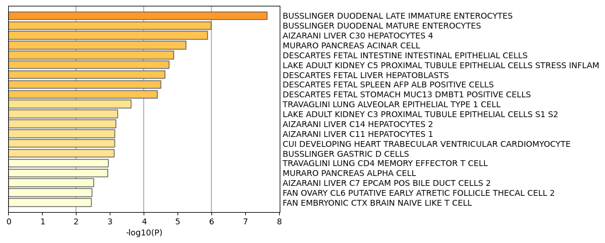
|
|
|
| GO |
Description |
Count |
% |
Log10(P) |
Log10(q) |
| M40028 |
BUSSLINGER DUODENAL LATE IMMATURE ENTEROCYTES |
11 |
5.60 |
-7.60 |
-3.10 |
| M40029 |
BUSSLINGER DUODENAL MATURE ENTEROCYTES |
11 |
5.60 |
-6.00 |
-2.20 |
| M39129 |
AIZARANI LIVER C30 HEPATOCYTES 4 |
14 |
7.20 |
-5.90 |
-2.10 |
| M39174 |
MURARO PANCREAS ACINAR CELL |
17 |
8.70 |
-5.20 |
-1.70 |
| M40212 |
DESCARTES FETAL INTESTINE INTESTINAL EPITHELIAL CELLS |
10 |
5.10 |
-4.90 |
-1.50 |
| M39224 |
LAKE ADULT KIDNEY C5 PROXIMAL TUBULE EPITHELIAL CELLS STRESS INFLAM |
12 |
6.20 |
-4.70 |
-1.40 |
| M40234 |
DESCARTES FETAL LIVER HEPATOBLASTS |
13 |
6.70 |
-4.60 |
-1.40 |
| M40287 |
DESCARTES FETAL SPLEEN AFP ALB POSITIVE CELLS |
8 |
4.10 |
-4.50 |
-1.30 |
| M40301 |
DESCARTES FETAL STOMACH MUC13 DMBT1 POSITIVE CELLS |
6 |
3.10 |
-4.40 |
-1.30 |
| M41659 |
TRAVAGLINI LUNG ALVEOLAR EPITHELIAL TYPE 1 CELL |
10 |
5.10 |
-3.60 |
-0.68 |
| M39222 |
LAKE ADULT KIDNEY C3 PROXIMAL TUBULE EPITHELIAL CELLS S1 S2 |
7 |
3.60 |
-3.20 |
-0.45 |
| M39118 |
AIZARANI LIVER C14 HEPATOCYTES 2 |
7 |
3.60 |
-3.20 |
-0.40 |
| M39115 |
AIZARANI LIVER C11 HEPATOCYTES 1 |
8 |
4.10 |
-3.10 |
-0.38 |
| M39310 |
CUI DEVELOPING HEART TRABECULAR VENTRICULAR CARDIOMYOCYTE |
5 |
2.60 |
-3.10 |
-0.38 |
| M40017 |
BUSSLINGER GASTRIC D CELLS |
3 |
1.50 |
-3.10 |
-0.38 |
| M41683 |
TRAVAGLINI LUNG CD4 MEMORY EFFECTOR T CELL |
4 |
2.10 |
-2.90 |
-0.29 |
| M39168 |
MURARO PANCREAS ALPHA CELL |
11 |
5.60 |
-2.90 |
-0.28 |
| M39111 |
AIZARANI LIVER C7 EPCAM POS BILE DUCT CELLS 2 |
6 |
3.10 |
-2.50 |
-0.06 |
| M41708 |
FAN OVARY CL6 PUTATIVE EARLY ATRETIC FOLLICLE THECAL CELL 2 |
7 |
3.60 |
-2.50 |
-0.02 |
| M39047 |
FAN EMBRYONIC CTX BRAIN NAIVE LIKE T CELL |
5 |
2.60 |
-2.40 |
-0.01 |
|
Figure 6. Summary of enrichment analysis in DisGeNET13.
|
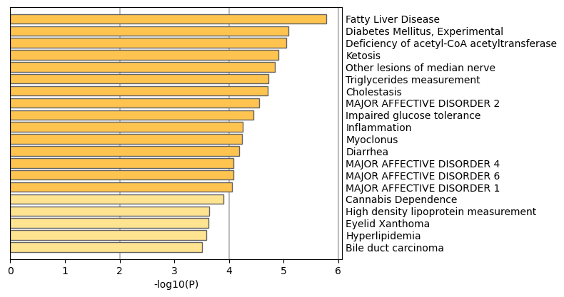
|
|
|
| GO |
Description |
Count |
% |
Log10(P) |
Log10(q) |
| C4529962 |
Fatty Liver Disease |
18 |
9.20 |
-5.80 |
-2.10 |
| C0011853 |
Diabetes Mellitus, Experimental |
14 |
7.20 |
-5.10 |
-1.60 |
| C1536500 |
Deficiency of acetyl-CoA acetyltransferase |
3 |
1.50 |
-5.00 |
-1.60 |
| C0022638 |
Ketosis |
7 |
3.60 |
-4.90 |
-1.50 |
| C0154742 |
Other lesions of median nerve |
3 |
1.50 |
-4.80 |
-1.50 |
| C0202236 |
Triglycerides measurement |
14 |
7.20 |
-4.70 |
-1.40 |
| C0008370 |
Cholestasis |
12 |
6.20 |
-4.70 |
-1.40 |
| C1839839 |
MAJOR AFFECTIVE DISORDER 2 |
8 |
4.10 |
-4.50 |
-1.30 |
| C0271650 |
Impaired glucose tolerance |
14 |
7.20 |
-4.50 |
-1.30 |
| C0021368 |
Inflammation |
12 |
6.20 |
-4.30 |
-1.20 |
| C0027066 |
Myoclonus |
9 |
4.60 |
-4.20 |
-1.20 |
| C0011991 |
Diarrhea |
14 |
7.20 |
-4.20 |
-1.10 |
| C1970943 |
MAJOR AFFECTIVE DISORDER 4 |
7 |
3.60 |
-4.10 |
-1.00 |
| C1970945 |
MAJOR AFFECTIVE DISORDER 6 |
7 |
3.60 |
-4.10 |
-1.00 |
| C1852197 |
MAJOR AFFECTIVE DISORDER 1 |
7 |
3.60 |
-4.10 |
-1.00 |
| C0006870 |
Cannabis Dependence |
4 |
2.10 |
-3.90 |
-0.88 |
| C0392885 |
High density lipoprotein measurement |
12 |
6.20 |
-3.60 |
-0.68 |
| C0155210 |
Eyelid Xanthoma |
3 |
1.50 |
-3.60 |
-0.68 |
| C0020473 |
Hyperlipidemia |
11 |
5.60 |
-3.60 |
-0.65 |
| C0740277 |
Bile duct carcinoma |
5 |
2.60 |
-3.50 |
-0.62 |
|
Figure 7. Summary of enrichment analysis in PaGenBase14.
|
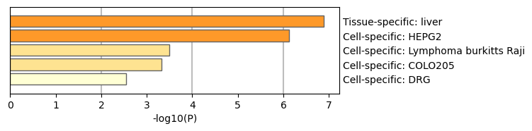
|
|
|
| GO |
Description |
Count |
% |
Log10(P) |
Log10(q) |
| PGB:00001 |
Tissue-specific: liver |
19 |
9.70 |
-6.90 |
-2.90 |
| PGB:00058 |
Cell-specific: HEPG2 |
14 |
7.20 |
-6.10 |
-2.20 |
| PGB:00110 |
Cell-specific: Lymphoma burkitts Raji |
6 |
3.10 |
-3.50 |
-0.62 |
| PGB:00128 |
Cell-specific: COLO205 |
3 |
1.50 |
-3.30 |
-0.52 |
| PGB:00065 |
Cell-specific: DRG |
9 |
4.60 |
-2.50 |
-0.06 |
|
Figure 8. Summary of enrichment analysis in TRRUST.
|
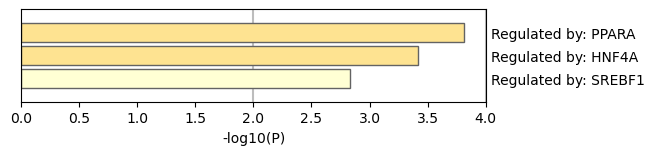
|
|
|
| GO |
Description |
Count |
% |
Log10(P) |
Log10(q) |
| TRR01060 |
Regulated by: PPARA |
4 |
2.10 |
-3.80 |
-0.83 |
| TRR00500 |
Regulated by: HNF4A |
4 |
2.10 |
-3.40 |
-0.59 |
| TRR01268 |
Regulated by: SREBF1 |
3 |
1.50 |
-2.80 |
-0.23 |
|
Figure 9. Summary of enrichment analysis in Transcription Factor Targets.
|
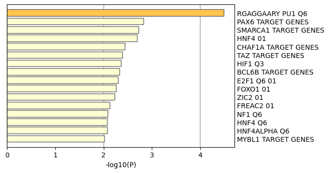
|
|
|
| GO |
Description |
Count |
% |
Log10(P) |
Log10(q) |
| M15616 |
RGAGGAARY PU1 Q6 |
13 |
6.70 |
-4.50 |
-1.30 |
| M40719 |
PAX6 TARGET GENES |
13 |
6.70 |
-2.80 |
-0.22 |
| M30163 |
SMARCA1 TARGET GENES |
5 |
2.60 |
-2.70 |
-0.14 |
| M13672 |
HNF4 01 |
7 |
3.60 |
-2.70 |
-0.13 |
| M29921 |
CHAF1A TARGET GENES |
4 |
2.10 |
-2.40 |
-0.01 |
| M30192 |
TAZ TARGET GENES |
9 |
4.60 |
-2.40 |
0.00 |
| M14011 |
HIF1 Q3 |
6 |
3.10 |
-2.40 |
0.00 |
| M29904 |
BCL6B TARGET GENES |
5 |
2.60 |
-2.30 |
0.00 |
| M3037 |
E2F1 Q6 01 |
6 |
3.10 |
-2.30 |
0.00 |
| M11512 |
FOXO1 01 |
6 |
3.10 |
-2.30 |
0.00 |
| M7797 |
ZIC2 01 |
6 |
3.10 |
-2.20 |
0.00 |
| M1031 |
FREAC2 01 |
6 |
3.10 |
-2.10 |
0.00 |
| M4803 |
NF1 Q6 |
6 |
3.10 |
-2.10 |
0.00 |
| M18844 |
HNF4ALPHA Q6 |
6 |
3.10 |
-2.10 |
0.00 |
| M8634 |
HNF4 Q6 |
6 |
3.10 |
-2.10 |
0.00 |
| M40712 |
MYBL1 TARGET GENES |
5 |
2.60 |
-2.00 |
0.00 |
|
Reference
- Zhou et al., Metascape provides a biologist-oriented resource for the analysis of systems-level datasets. Nature Communications (2019) 10(1):1523.
- Zar, J.H. Biostatistical Analysis 1999 4th edn., NJ Prentice Hall, pp. 523
- Hochberg Y., Benjamini Y. More powerful procedures for multiple significance testing. Statistics in Medicine (1990) 9:811-818.
- Cohen, J. A coefficient of agreement for nominal scales. Educ. Psychol. Meas. (1960) 20:27-46.
- Shannon P. et al., Cytoscape: a software environment for integrated models of biomolecular interaction networks. Genome Res (2003) 11:2498-2504.
- Szklarczyk D. et al. STRING v11: protein-protein association networks with increased coverage, supporting functional discovery in genome-wide experimental datasets. Nucleic Acids Res. (2019) 47:D607-613.
- Stark C. et al. BioGRID: a general repository for interaction datasets. Nucleic Acids Res. (2006) 34:D535-539.
- Turei D. et al. A scored human protein-protein interaction network to catalyze genomic interpretation. Nat. Methods. (2016) 13:966-967.
- Li T. et al. A scored human protein-protein interaction network to catalyze genomic interpretation. Nat. Methods. (2017) 14:61-64.
- Bader, G.D. et al. An automated method for finding molecular complexes in large protein interaction networks. BMC bioinformatics (2003) 4:2.
- https://metascape.org/COVID.
- Subramanian A, et al. Gene set enrichment analysis: A knowledge-based approach for interpreting genome-wide expression profiles. Proc Natl Acad Sci U S A 102, 15545-15550 (2005).
- Pinero J, et al. DisGeNET: a comprehensive platform integrating information on human disease-associated genes and variants. Nucleic acids research 45, D833-D839 (2017).
- Pan JB, et al. PaGenBase: a pattern gene database for the global and dynamic understanding of gene function. PLoS One 8, e80747 (2013).